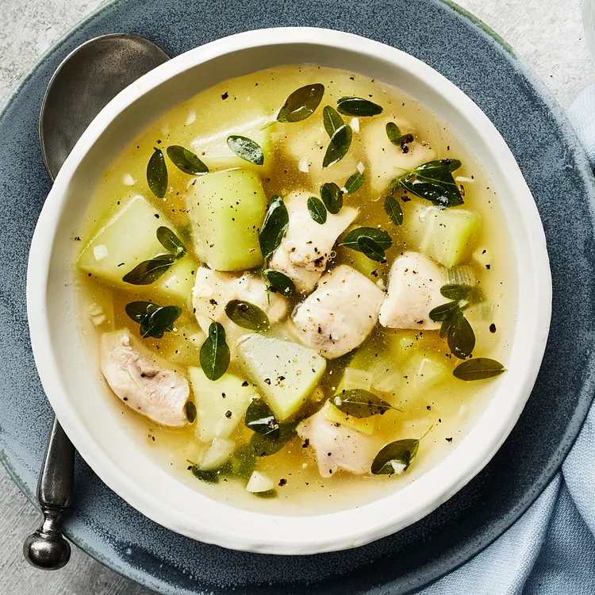

Tinola

Description
Ingredients
- 3 tablespoons canola oil or avocado oil
- ½ cup chopped yellow onion
- ¼ cup thinly sliced fresh ginger
- 6 cloves garlic, minced
- 1 pound boneless, skinless chicken thighs, trimmed and cut into 1/2-inch pieces
- 4 cups low-sodium chicken broth
- 1 ½ cups peeled and cubed green papaya or chayote
- 2 cups chopped malunggay leaves or bok choy leaves
- 1 tablespoon fish sauce
- ¼ teaspoon salt
- ¼ teaspoon ground black pepper
Steps
- Heat oil in a large pot over medium heat.
- Add onion, ginger and garlic; cook, stirring, until the onion starts to turn translucent, about 3 minutes.
- Add chicken and broth; cook, stirring, until the chicken is just cooked through, about 5 minutes.
- Add papaya (or chayote), malunggay (or bok choy), fish sauce, salt and pepper
- Continue simmering until the vegetables are tender and the flavors have melded, about 5 minutes more.